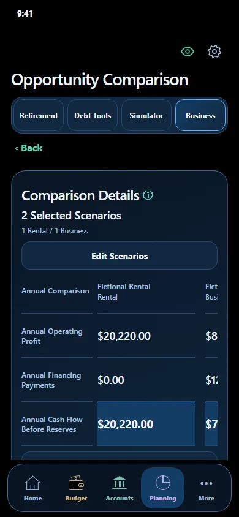
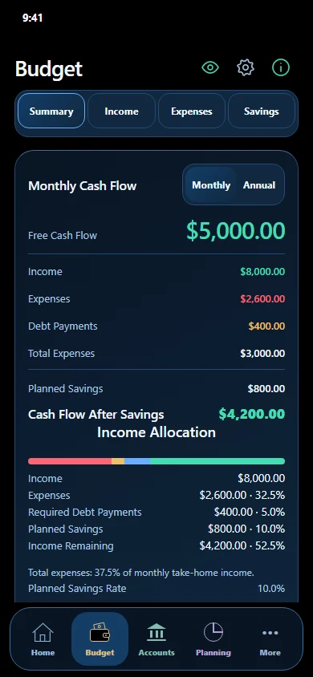

Organize Your Finances
Track assets, liabilities, income, and expenses. Review net worth and cash flow.
Financial OverviewOrganize what you own, owe, earn, and spend. Plan for retirement, explore debt strategies, compare rental and business scenarios, and create reports you can review or share.
See What the App Does

Track assets, liabilities, income, and expenses. Review net worth and cash flow.
Financial OverviewEstimate investment growth, compare debt strategies, and model rental or business scenarios.
Planning ToolsCreate statements and export available planning results to PDF.
Reports and StatementsEstimate investment growth, explore debt payoff, or model costs and cash flow for a rental or small business.
Select two to four saved rental or business scenarios and compare operating profit, financing payments, and cash flow side by side.
See Opportunity Comparison
Appearance
Choose a theme and a screen to preview the app.
